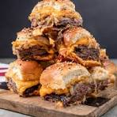

Roast Beef and Cheddar Sliders

Home
Description
Roast Beef and Cheddar Sliders are delectable mini sandwiches that make for a perfect appetizer or snack.
These sliders feature tender, thinly sliced roast beef, layered with rich, melted cheddar cheese, and nestled in soft, buttery slider buns.
Each slider is enhanced with a spread of creamy horseradish sauce or tangy Dijon mustard, adding a burst of flavor.
Often topped with caramelized onions or fresh arugula, these bite-sized treats offer a delightful combination of savory, cheesy, and slightly spicy notes,
making them an irresistible crowd-pleaser for any gathering.
Ingredients
- 4 tablespoons butter, melted, divided
- 1 (12 roll) package Hawaiian rolls, split in half horizontally
- 12 ounces deli roast beef
- 1/2 cup thin tangy BBQ sauce, such as Arby's® Original Sauce
- 1 cup Cheddar cheese sauce
- 1/4 teaspoon garlic powder
- 1/4 teaspoon onion powders
- 2 teaspoons everything bagel seasoningd
Steps
- Preheat the oven to 350 degrees F (175 degrees C). Brush the bottom and sides of a 9x13-inch baking dish with melted butter until lightly coated.
- Place bottom half of rolls in baking dish and top evenly with roast beef slices. Drizzle BBQ sauce evenly over roast beef and dollop cheese sauce evenly over the top. Place top roll halves on top.
- Stir together remaining butter, garlic powder, and onion powder and brush evenly over bun tops. Sprinkle with bagel seasoning..
- Bake in the preheated oven until the center is warm and melted, and bread is toasted and golden brown, 12 to 14 minutes.
- Arrange sliced bananas evenly on top.